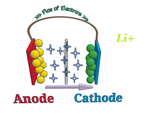
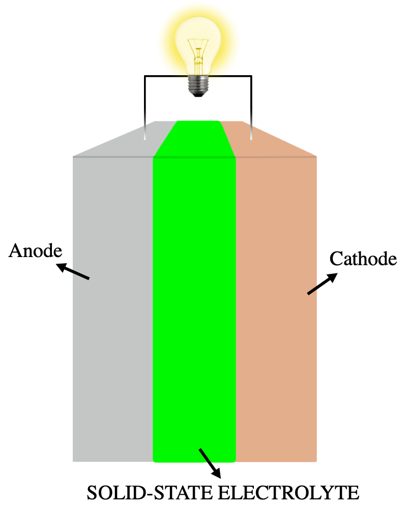
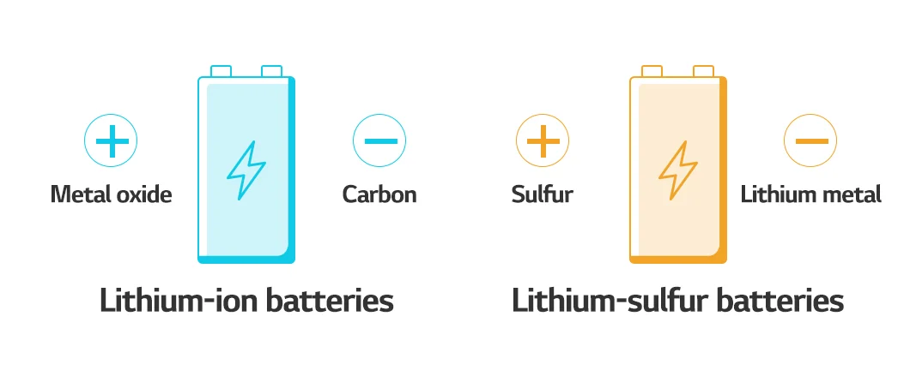
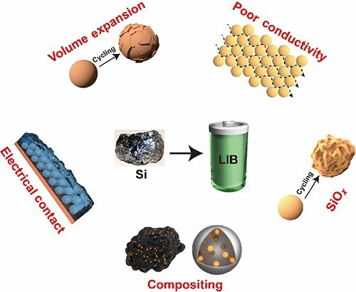
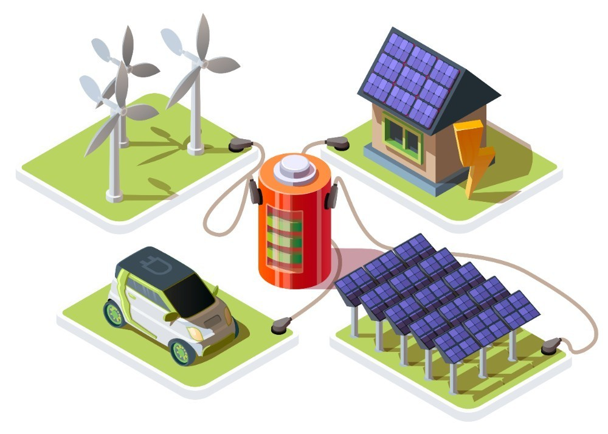

The world is undergoing an energy transformation, with the humble lithium-ion battery at its core. As the global demand for clean, sustainable energy soars, the lithium-ion battery industry has become pivotal in driving the clean energy transition. These remarkable energy storage devices power electric vehicles (EVs) and facilitate advancements in renewable energy storage, making them integral to our modern way of life.
However, the current lithium-ion battery technology faces limitations. Concerns about EV range, slow charging times, and the need for improved energy density present challenges that researchers and innovators are working tirelessly to overcome. Fortunately, the lithium-ion battery manufacturing industry is on the cusp of a new era, with cutting-edge technologies poised to redefine the energy storage landscape.
The Booming Lithium-ion Battery Market
The global lithium-ion battery market is experiencing unprecedented growth, driven by the increasing adoption of electric vehicles, the rise of renewable energy, and the ever-growing demand for portable electronics. Industry reports project the lithium-ion battery market to reach over USD 300 billion by 2030, representing a compound annual growth rate (CAGR) of more than 12 percent during the forecast period.
This market expansion is deeply intertwined with the global push for sustainability and the urgent need to address climate change. As the world transitions away from fossil fuels and towards cleaner energy sources, the role of lithium-ion batteries has become increasingly critical. These energy storage devices enable the widespread adoption of electric vehicles, provide reliable storage solutions for renewable energy, and power a wide range of consumer electronics essential to modern life.
The Current Limitations of Lithium-ion Batteries
Despite their remarkable advancements, the current lithium-ion batteries face several limitations that hinder their full potential. One of the most prominent challenges is "range anxiety" for electric vehicle (EV) owners. While progress has been made in increasing EV driving range, many consumers still worry about their vehicles' ability to travel long distances on a single charge.

Another key limitation is the relatively slow charging times of lithium-ion batteries. As consumers demand faster and more convenient charging options, the industry works to develop solutions that can significantly reduce the time required to fully recharge a battery pack.
Additionally, the energy density of lithium-ion batteries remains a crucial factor for various applications, particularly in consumer electronics and grid-scale energy storage. Higher energy density would translate to longer battery life, increased EV driving ranges, and more efficient energy storage solutions for renewable energy systems.
Emerging Lithium-ion Battery Technologies
Fortunately, the world of lithium-ion battery manufacturing is on the cusp of a technological revolution, with a range of promising new technologies poised to address the current limitations and unlock the full potential of these energy storage devices.
Solid-State Electrolytes
One of the most exciting developments in lithium-ion battery technology is the advent of solid-state electrolytes. These innovative materials replace the traditional liquid electrolyte, offering several key advantages. Solid-state electrolytes have the potential to improve battery safety by reducing the risk of thermal runaway and fire. They also enable faster charging times, as the solid-state design allows for the rapid movement of lithium ions between the anode and cathode. Furthermore, solid-state electrolytes can contribute to increased energy density, leading to longer driving ranges for EVs and more efficient energy storage solutions.

Researchers and industry leaders are actively working to overcome the technical challenges associated with solid-state electrolytes, such as improving ionic conductivity and developing scalable manufacturing processes. As these hurdles are addressed, the widespread adoption of solid-state lithium-ion batteries could revolutionize the energy storage landscape.
Lithium-Sulfur and Lithium-Metal Batteries
Promising next-generation lithium-ion battery technologies include lithium-sulfur and lithium-metal batteries.
Lithium-sulfur batteries offer significantly higher energy densities compared to conventional lithium-ion batteries. This is due to the use of lightweight and abundant sulfur as the cathode material, allowing for the storage of more lithium ions per unit of volume. Lithium-sulfur batteries could enable longer-range electric vehicles and more efficient energy storage for renewable energy systems.

Lithium-metal batteries utilize a metallic lithium anode instead of the traditional graphite anode. This approach has the potential to further increase energy density and improve overall battery performance. However, the development of lithium-metal batteries has faced challenges related to the formation of lithium dendrites, which can lead to safety concerns and reduced battery life.
Researchers are actively exploring strategies to overcome the obstacles faced by both lithium-sulfur and lithium-metal batteries, such as developing specialized electrolytes, advanced electrode materials, and novel battery designs. As these technologies mature, they could revolutionize the energy storage landscape.
Novel Anode Materials
The development of novel anode materials is a crucial aspect of the evolution of lithium-ion battery technology. One such material that has gained significant attention is silicon. Silicon-based anodes have the potential to provide much higher energy densities compared to the traditional graphite anodes used in most lithium-ion batteries, due to silicon's ability to store a larger number of lithium ions per unit of volume.
However, the use of silicon anodes has faced challenges related to volume expansion during the charging and discharging process, leading to reduced battery life and performance. Researchers are actively exploring strategies to address these issues, such as developing silicon-based composite materials, implementing advanced binders, and optimizing battery cell designs.

As the development of silicon-based anodes progresses, they could enable lithium-ion batteries with longer lifespans, increased energy densities, and improved overall performance.
Benefits and Challenges
The emergence of these cutting-edge lithium-ion battery technologies holds immense promise for a wide range of applications, from the transportation sector to the renewable energy industry.
Longer-Range Electric Vehicles
The improvements in energy density and charging times promised by solid-state electrolytes, lithium-sulfur, and lithium-metal batteries could significantly enhance the driving range of electric vehicles. This would help alleviate the issue of "range anxiety" that has been a major concern for many consumers, making EVs a more practical and appealing option for a broader audience.
More Efficient Consumer Electronics
The increased energy density of next-generation lithium-ion batteries could also have a profound impact on the consumer electronics market. Devices such as smartphones, laptops, and other portable electronics could see significant improvements in battery life, allowing users to enjoy their devices for longer periods without the need for frequent recharging.
Better Grid-Scale Energy Storage
The ability of these emerging lithium-ion battery technologies to store more energy per unit of volume and mass could also benefit the renewable energy sector. Improved energy storage solutions would enhance the integration of intermittent renewable sources, such as solar and wind, into the electrical grid, making the transition to a clean energy future more feasible and efficient.

Challenges and Roadblocks
Cutting-edge lithium-ion battery technologies like solid-state, lithium-sulfur, and lithium-metal offer significant potential benefits, but their widespread commercialization faces several challenges.
Researchers and manufacturers must overcome technical hurdles to enable these technologies to transition from the lab to the marketplace. For solid-state electrolytes, this includes optimizing ionic conductivity, compatibility with electrodes, and scalable manufacturing.
Similarly, lithium-sulfur and lithium-metal batteries require solutions to issues like dendrite formation, capacity degradation, and safety concerns.
Addressing these technical challenges will be crucial to ensuring these next-generation battery technologies can make a tangible impact on the clean energy revolution. Overcoming the obstacles to commercialization will be essential for these cutting-edge technologies to realize their full potential.